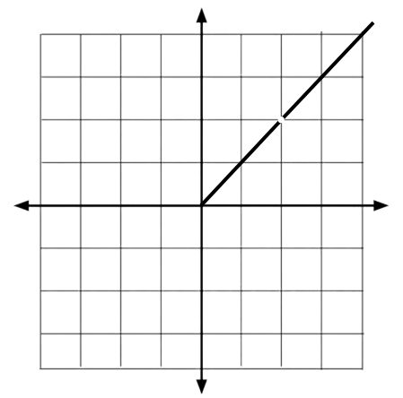

x = 0.9
(0.81 - 1)0.9 - 1 = -0.19-0.10 = 0.19 * 10 = 1.9
Now when x equals 0.9, the function outputs 1.9, which is close to 2 but not exactly 2. In a limit, no matter how many digits the variable approaching a certain number has without exactly being that number, it will get close to L but not exactly L…x = 0.99
(0.9801 - 1) / 0.99 - 1 = -0.0199 / -0.01 = 1.99
x = 0.999
(0.998001 - 1) / 0.999 - 1 = -0.001999 / -0.001 = 1.999
On a graph, this limit would show up like this…  The reason why there is a hole when x = 2 is because it is undefined, meaning we don’t really know the value of x when it equals 1 because it turns into 0/0. But when applied in real life, this logic wouldn’t make any sense, a slope suddenly cuts off and magically there is nothing there. This is where we would go above 1 (going from the opposite side) and try to get as close to 2…x = 1.1
(1.21 - 1) / 1.1 - 1 = .21 / 0.1 = 2.1
x = 1.01
(1.0201 - 1) / 1.01 - 1 = 0.0201 / .01 = 2.01
x = 1.
(1.002001 - 1) / 1.001 - 1 = 0.002001 / 0.001 = 2.001
As we keep adding more zeros, the closer the quotient gets to 2. This means that when x is smaller or bigger than 1, the result will always be close to 2 but not exactly 2 which is okay.